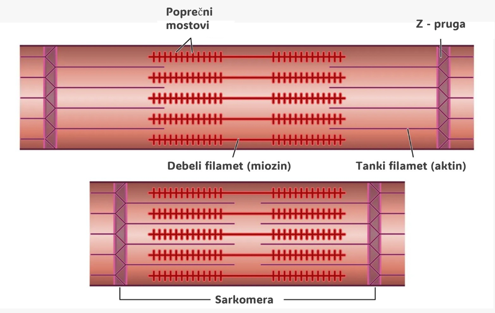

Mačja trka
Mačke postoje već više od 10 milijuna godina! Prve mačke nalikovale su na pantere i pojavile su se u jugoistočnoj Aziji (rod Neofelis). Mačke iz roda Panthera (lav, jaguar, tigar…) su se odvojile od prvih mačaka prije oko 4 milijuna godina, a prvi predak današnjih domaćih mačaka pojavio se tek prije 3.4 milijuna godina (rod Felis) (1).
Naš fokus bit će na lavu, tigru, gepardu, domaćoj mački, risu i leopardu. Napravljeno je filogenetsko stablo s proteinima mitohondrijske citokrom c oksidaze.
U nastavku vježbe ćemo napraviti stabla koristeći proteine koji su sastavni dio mišića. Razlike u tim proteinima rezultiraju različitim sposobnostima mačaka kao što su npr. brzina trčanja ili penjanje. Napravljena je i tablica svojstava koju ćemo koristiti kao pomoć u interpretaciji stabala.
| Karakteristika | Tigar | Lav | Leopard | Ris | Gepard | Domaća mačka |
|---|---|---|---|---|---|---|
| Veličina tijela (cm) | 195 | 184-208 | 91-191 | 70-120 | 112-150 | 46 |
| Duljina repa (cm) | 99 | 82,5-93,5 | 58-110 | 15-25 | 60-80 | 30 |
| Masa tijela (kg) | 222,3 | 174,9-225 | 30,9-72 | 8,0-25,0 | 21-27 | 4,0-5,0 |
| Brzina trčanja (km/h) | 96 | 80 | 58 | 80 | 130 | 48 |
| Izdržljivost tijekom max. Brzine (m) | 200-300 | 200-300 | 200 | 200 | 300-400 | 50-100 |
| Sposobnost penjanja | Loša | Loša | Jako dobar penjač | Dobar penjač | Loš penjač | Dobar penjač |
| Izgled tijela | Krupan, mišićav, jako velike šape | Mišićavo tijelo, velike šape | Mišićavo, kompaktno tijelo, snažne stražnje noge, velike šape | Malo vitko tijelo s dugim repom | Vitko tijelo i lagane kosti, uzak struk | Malo, vitko tijelo, lagani kostur |
| Lov | Individualno, iznenadni napad, skrivanje | Lov u grupi, trčanje na dulje udaljenosti | Individualno, noćna životinja, lovi u stablima | Individualno, u šumi, male životinje | Individualno, brzi sprint na otvorenom | Individualno, noćni lov, skrivanje |
Mišićna kontrakcija
Mišićno tkivo specijalizirano je za kontrakciju te omogućuje pokretanje cijelog ili dijelova tijela, protok krvi kroz krvožilni sustav kao posljedicu srčanih kontrakcija te peristaltiku izraženu u probavnom sustavu. Takđer, sudjeluju u procesu termogeneze, generirajući toplinu kao nusprodukt pretvaranja kemijske u kinetičku energiju hidrolizom ATP-a (2). S obzirom na karakteristike histoloških uzoraka mišićna tkiva podijeljena su u tri tipa : poprečno-prugasti (skeletni), glatki mišići i srčani mišić (3). Histološki preparati različitih tipova mišićnog tkiva prikazani su na Slici 1.
Poprečno-prugasti mišići omogućuju gibanje kostiju i zglobova. Njhovim kontrakcijama upravlja središnji živčani sustav i pod utjecajem su naše volje. Sastoje se od velikoga broja paralelno postavljenih mišićnih vlakana obavijenih staničnom membranom i povezanih u mišićne snopove. Karakteristični su po prugastom uzorku vidljivim pod svjetlosnim mikroskopom.
Glatki mišići nalaze se u stijenkama unutarnjih organa poput crijeva, krvnih žila i mokraćnog mjehura. Oni nisu pod voljnom kontrolom i omogućuju sporije, kontinuirane kontrakcije.
Srčani mišići grade miokard, sloj mišićnog tkiva srca. Srčani mišić također je prugastog izgleda poput skeletnih mišića, međutim kontrahira autonomno poput glatkih mišića.
Poprečno-prugasti mišići, prema brzini kontrakcije dijele se na brzo kontrahirajuća vlakna koja su bljeđeg obojenja zbog niže koncentracije mioglobina, hemoproteina koji sudjeluje u prijenosu kisika, i sporije kontrahirajuća vlakna crvenog obojenja zbog više zastupljenosti miglobina. Brza vlakna specijalizirana su za eksplozivne pokrete, primjerice sprintanje, ali se brzo umaraju. Kao posljedicu nedostatka mioglobina, energiju dobivaju anaerobnim metabolizmom. Sporija vlakna karakterizira aerobni metabolizam, otpornija su na zamor i pogodna za dugotrajne aktivnosti poput trčanja na duge staze (4). Na Slici 2. prikazana su oba tipa poprečno-prugastih mišića, a Slika 3. prikazuje jasno vidljive razlike u građi skeletnih mišića u sprintera i maratonca.
Građa mišićnih stanica
Mišićna vlakna su stanice cilindrične morfologije obavijene plazmatskom membranom sarkolemom u kojima se nalazi do nekoliko tisuća izduženih miofibrila obavijenih sarkoplazmatskom mrežicom (Slika 4). Miofibrile su ispunjene pravilno, paralelno raspoređenim aktinskim i miozinskim filamentima i organizirane su u funkcionalne kontrakcijske jedinice sarkomere koje se protežu između Z-diskova (Slika 5). (5)

Molekularni mehanizam kontrakcije
Kontrakcija mišića temelji se na interakciji aktina i miozina unutar sarkomera. Proces započinje kada kalcijevi ioni (Ca²⁺) oslobođeni iz sarkoplazmatskog retikuluma vežu protein troponin, što uzrokuje pomicanje tropomiozina s mjesta vezivanja na aktinu. To nadalje omogućuje miozinskim glavama da se vežu za aktin, čime dolazi do stvaranja poprečnih mostova. Hidroliza ATP-a omogućuje savijanje miozinskih glava, što povlači aktinske filamente prema centru sarkomere, uzrokujući kontrakciju. Ovaj ciklus se ponavljanja dok ima dovoljno ATP-a i kalcija u stanici. Molekularni mehanizam mišiće kontrakcije prikazan je na Slikci 6, Slici 7 te Slici 8. [(6)](7)


Myosin Heavy Chain 4 (MYH4)
MYH4 (Myosin Heavy Chain 4) je gen koji kodira za protein miozin-4 koji je prisutan u brzim skeletnim mišićima tipa IIb. Bitan je za brze i snažne kontrakcije mišića koje omogućuju sprintanje i brze reakcije. Razlike u ovom proteinu mogu utjecati na maksimalnu brzinu mačaka. (8)
Pronađene su aminokiselinske sekvence proteina MYH4 geparda, domaće mačke, leoparda, risa, tigra i lava. Sekvence su poravnate te je napravljeno filogenetsko stablo:

INTERPRETACIJA STABLA:
MYH4 tigra i lava je srodan. Tigar i lav imaju sličnu maksimalnu brzinu trčanja.
MYH4 leoparda i risa je blisko srodan. Obje životinje su dobri penjači.
Zatim je s njima srodna domaća mačka te je gepard najudaljeniji. Gepard najviše odskače od ostalih mačaka svojom maksimalnom brzinom od čak 130 km/h.
Sarkoplazmatska/endoplazmatska kalcij ATP-aza 2 (ATP2A2)
Gen ATP2A2 kodira za protein Sarkoplazmatska/endoplazmatska kalcij ATP-aza 2 koji je lokaliziran u membrani sarkoplazmatskog retikuluma mišićnih stanica te vrši funckiju intracelularne kalcijeve pumpe katalizirajući translokaciju kalcijevih iona iz citosola u lumen sarkoplazmatskog retikuluma u smjeru suprotnom od elektrokemijskog gradijenta, hidrolizirajući pritom ATP. Budući da je prisutnost kalcija u mišićnim vlaknima neophodna za uspostavljanje pravilnih interakcija između miozinskih i aktinskih molekula, posljedica čega je sposobnost mišićne kontrakcije, razlike u sekvenci, odnosno strukturi proteina ATP2A2 mogu utjecati na atletsku sposobnost vrsti divljih mačaka. (9)
Pronađene su aminokiselinske sekvence proteina ATP2A2 geparda, domaće mačke, leoparda, risa, tigra i lava. Sekvence su poravnate te je napravljeno filogenetsko stablo:

INTERPRETACIJA STABLA:
Najsrodniji su leopard i gepard koji s domaćom mačkom i risom čine jednu skupinu. Zatim slijedi lav pa tigar.
Leopard je jako dobar penjač, a gepard sprinter. Obje životinje u tim aspektima pokazuju vrlo visoku atletsku sposobnost.
Ris i mačka su male životinje koje imaju sličan način lova koji se temelji na kratkim i eksplozivnim sprintovima. Mogu dugo loviti, ali nisu značajno dobre u penjanju ni trčanju.
Lavovi love u čoporima te moraju izdržati dulje trčanje. Manje je bitna eksplozivnost i brzina.
Tigrovi love individualno. Slabi su penjači te se lov temelji na dugom čekanju i kratkim eksplozivnim sprintovima (slično kao ris i domaća mačka, ali su tigrovi puno veći i teži te im je za istu stvar potrebna puno veća izdržljvost).
Podjedinica TnC troponina (TNNC2)
TNNC2 gen kodira za podjedinicu TnC proteina troponina koji je bitan faktor u regulaciji kontrakcije mišićnih vlakana. TnT podjedinica veže protein tropomiozina koji onemogućava interakcije između miozina i aktina blokirajući vezna mjesta na aktinu. Kada TnC podjedinica veže kalcijeve ione otpuštene iz sarkoplazmatskog retikuluma mišićne stanice dolazi do konformacijske promjene troponina koji pomiče tropomiozin sa aktinskih veznih mjesta te dolazi do vezanja miozina i aktina, odnosno mišićne kontrakcije. Razlike u ovom genu utječu na sposobnost brzih sprintova. (10)
Pronađene su aminokiselinske sekvence proteina TNNC2 geparda, domaće mačke, leoparda, risa, tigra i lava. Sekvence su poravnate te je napravljeno filogenetsko stablo:

INTERPRETACIJA STABLA:
Najsrodniji su TNNC2 geni leoparda i geparda, te zatim domaće mačke, risa, lava pa se od njih odvaja tigar.
Leopard je najbolji penjač od navedenih mačaka, a gepard najbrže trči. Obe mačke moraju imati iznimno dobru sposobnost kontrakcije mišićnih vlakana. Od njih se odvajaju domaća mačka i ris koji oboje imaju sličan omjer maksimalne brzine i veličine. Lav i tigar su oboje vrlo mišićavi te im vjerojatno mišići slično rade.
Zaključak
Stabla napravljena s različitim proteinima prikazuju različite veze između vrsta. To je jedna od mnogih komplikacija koje mogu nastati prilikom izrade filogenetskih stabala! Prilikom izrade filogenetskih stabala vrste potrebno je koristiti konzervirane gene kao što su citokrom c oksidaza. U ovom slučaju smo dobili filogenetsko stablo zasebnih proteina u vrstama, ali ne i cijele vrste. Ovakva filogenetska stabla nam mogu bolje pomoći da bolje razumijemo funkcije proteina.
Literatura
1.
O’Brien SJ, Johnson WE. The evolution of CATS. Scientific American [Internet]. 2007 [cited 2025 Apr 4];297(1):68–75. Dostupno na: http://www.jstor.org/stable/26069377
2.
Nowack J, Vetter SG, Stalder G, Painer J, Kral M, Smith S, et al. Muscle nonshivering thermogenesis in a feral mammal. Scientific Reports [Internet]. 2019 Apr 23;9(1). Dostupno na: http://dx.doi.org/10.1038/s41598-019-42756-z
3.
Gartner LP, Hiatt JL. Muscle. In Elsevier; 2011. p. 94–107. Dostupno na: http://dx.doi.org/10.1016/B978-0-7020-3114-4.00008-7
4.
Plotkin DL, Roberts MD, Haun CT, Schoenfeld BJ. Muscle Fiber Type Transitions with Exercise Training: Shifting Perspectives. Sports [Internet]. 2021 Sep 10;9(9):127. Dostupno na: http://dx.doi.org/10.3390/sports9090127
5.
Physiopedia. Muscle cells (myocyte) — physiopedia, [Internet]. 2022. Dostupno na: https://www.physio-pedia.com/index.php?title=Muscle_Cells_(Myocyte)&oldid=311213
6.
Clarke M. Muscle sliding filaments. Nature Reviews Molecular Cell Biology [Internet]. 2008 Dec 1;9(S1):s7–7. Dostupno na: http://dx.doi.org/10.1038/nrm2581
7.
Goody RS. The missing link in the muscle cross-bridge cycle. Nature Structural & Molecular Biology [Internet]. 2003 Oct;10(10):773–5. Dostupno na: http://dx.doi.org/10.1038/nsb1003-773
8.
Weiss A, Schiaffino S, Leinwand LA. Comparative sequence analysis of the complete human sarcomeric myosin heavy chain family: implications for functional diversity 1 1Edited by J. Karn. Journal of Molecular Biology [Internet]. 1999 Jul;290(1):61–75. Dostupno na: http://dx.doi.org/10.1006/jmbi.1999.2865
9.
MacLennan DH, Brandl CJ, Korczak B, Green NM. Amino-acid sequence of a Ca2+ + Mg2+ -dependent ATPase from rabbit muscle sarcoplasmic reticulum, deduced from its complementary DNA sequence. Nature [Internet]. 1985 Aug 22;316(6030):696–700. Dostupno na: http://dx.doi.org/10.1038/316696a0
10.
Gahlmann R, Wade R, Gunning P, Kedes L. Differential expression of slow and fast skeletal muscle troponin C. Journal of Molecular Biology [Internet]. 1988 May;201(2):379–91. Dostupno na: http://dx.doi.org/10.1016/0022-2836(88)90145-3